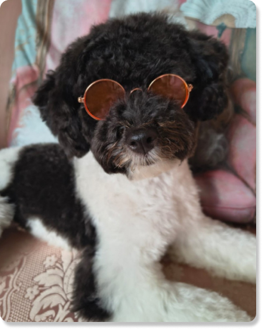
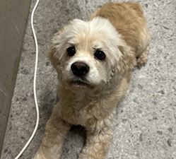
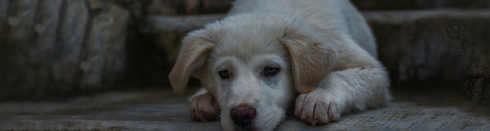

입양 이야기
사랑을 기다리는 아이들에게 또 하나의 기적이 이어지길 바랍니다

"장애를 넘어, 가족을 만나다"
두 눈이 없는 상태로 구조된 럭키,
지금은 해외에서 자신을 온전히 사랑해주는 가족과
함께 살아가고 있습니다.
럭키에게 입양은 세상을 다시 만나는 기회가 되었습니다.
매달 약정된 금액을 후원하여 협회의 전반적인 활동과 운영을 지지해주실 수 있습니다
보호소에서 입양을 기다리고 있습니다



사랑을 기다리는 아이들에게 또 하나의 기적이 이어지길 바랍니다

두 눈이 없는 상태로 구조된 럭키,
지금은 해외에서 자신을 온전히 사랑해주는 가족과
함께 살아가고 있습니다.
럭키에게 입양은 세상을 다시 만나는 기회가 되었습니다.
유기동물의 구조부터 평생 가족을 만나는 순간까지 함께합니다.
위험에 처한 유기동물을 구조하고, 안전한 보호 환경을 제공합니다.
건강검진과 치료, 기본 훈련을 통해 새로운 가족을 만날 준비를
돕습니다.
책임감 있는 입양 문의를 만들기 위해 입양 상담과 절차를
지원합니다.
입양 후에도 지속적인 상담과 사후 관리를 통해 안정적인 적응을
돕습니다.
보호소 환결 개선과 돌봄을 위한 봉사 프로그램을 운영합니다.
누구나 참여할 수 있도록 체계적인 교육과 활동 기회를 제공합니다.

그 아이들을 기다리는 건 기적이 아니라,
당신의 선택입니다